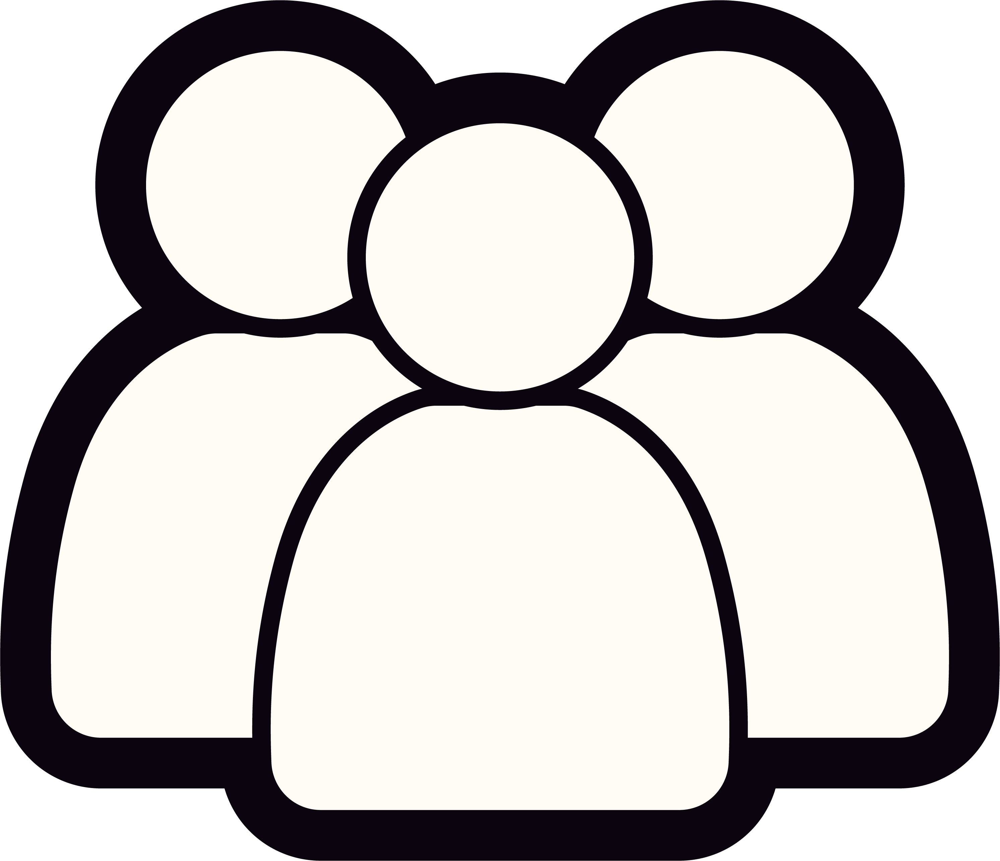

Confirmation Bias
È la tendenza a cercare, ricordare e interpretare le informazioni in modo da confermare le proprie convinzioni preesistenti, scartando tutto ciò che le contraddice
È la tendenza a cercare, ricordare e interpretare le informazioni in modo da confermare le proprie convinzioni preesistenti, scartando tutto ciò che le contraddice
È la bolla digitale creata dagli algoritmi sulla base delle nostre preferenze, isolandoci da qualsiasi confronto reale
Serve uno spazio di confronto diretto e sicuro per sfuggire alle manipolazioni digitali che inibiscono la capacità critica e l’empatia. Il dialogo reale dovrebbe essere un’opportunità per riscoprire la curiosità verso l’altro e capire da dove derivano le convinzioni di ognuno di noi.

3-6Blabble è il gioco che mette al centro del tavolo i temi di cui altrimenti non parleresti mai. Attraverso un sistema di carte e associazioni emotive, invita le persone a esporsi, motivare la propria visione e mettersi nei panni degli altri. Un’esperienza dal vivo pensata per trasformare la polarizzazione digitale in intesa e il disaccordo in pura curiosità.
Scarica regolamento Scarica il regolamento